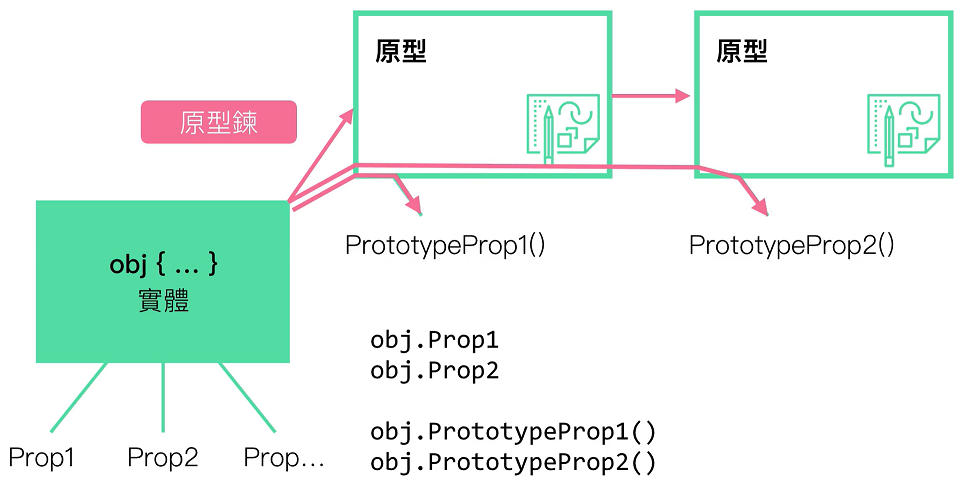
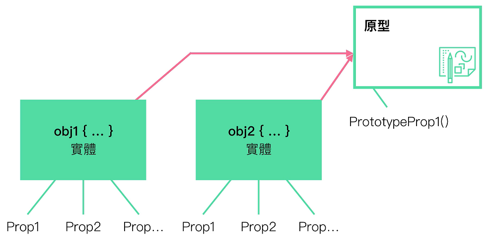

原型
原型的特性
- 一樣具有物件的特性, 原型一樣具有屬性 & 方法
- 向上查找, 繼承的物件可以透過向上查找, 查到原型的屬性 & 方法
- 原型可共用方法及屬性, 如多個實體都是繼承同一個原型的話, 原型更新時候, 實體所取用到的原型屬性 & 方法也都是更新後的結果
原型鍊

- 繼承的部分, 可以一段一段向上繼承, 稱為 原型鍊
- 取用原本的實體裡面的屬性, 使用點運算值去取用它 ( ex. obj.Prop1 )
- 原型取用方式也是相同概念, 取用屬性內容時, 可透過原型鍊的方式向上查找, 直到原型鍊的頂端為止

- 原型另一個特性
- 如果從一個原型新增的兩個實體的話
- 這兩個實體也都會共用同一個原型方法